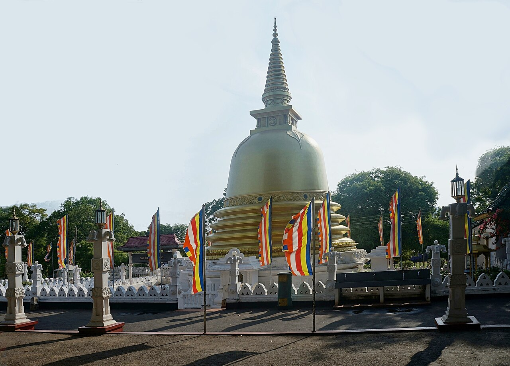
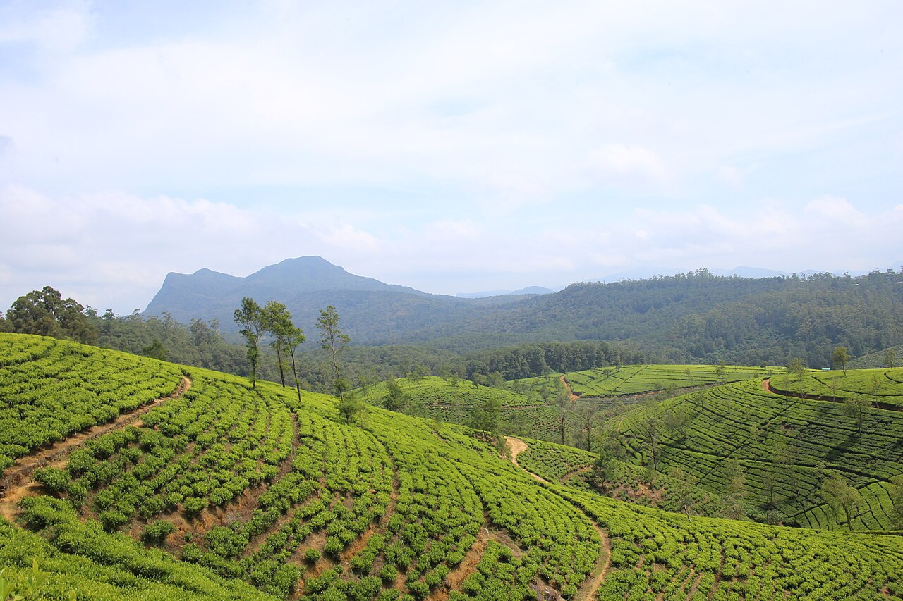
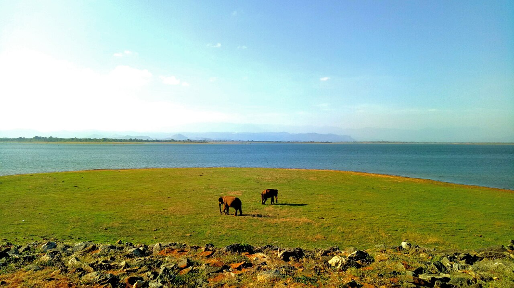
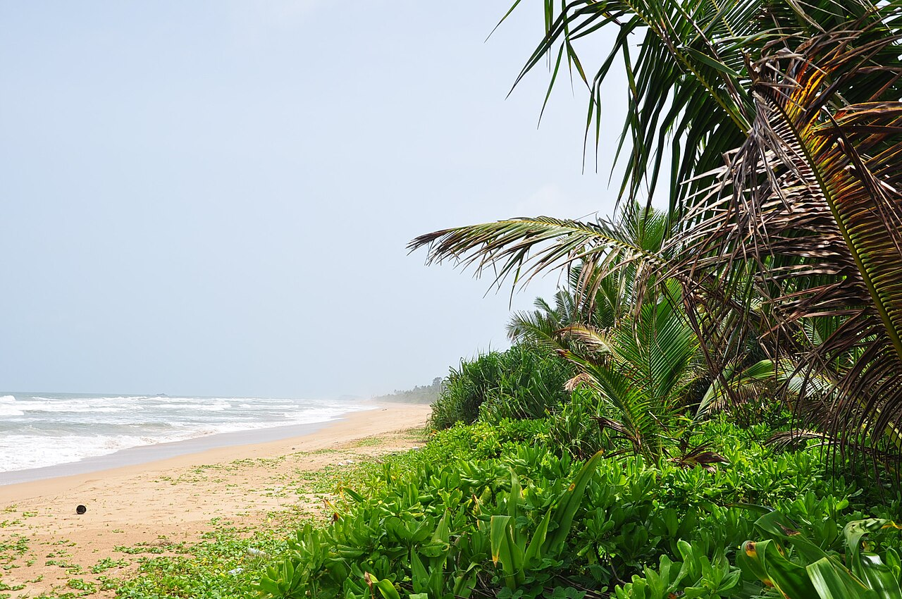
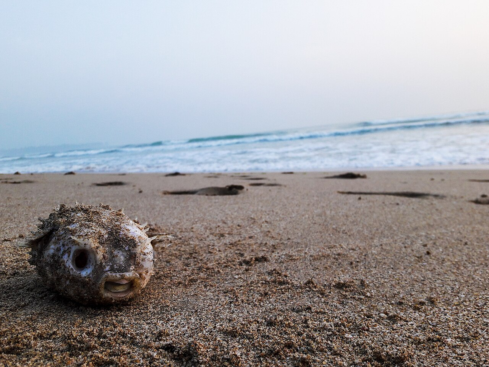
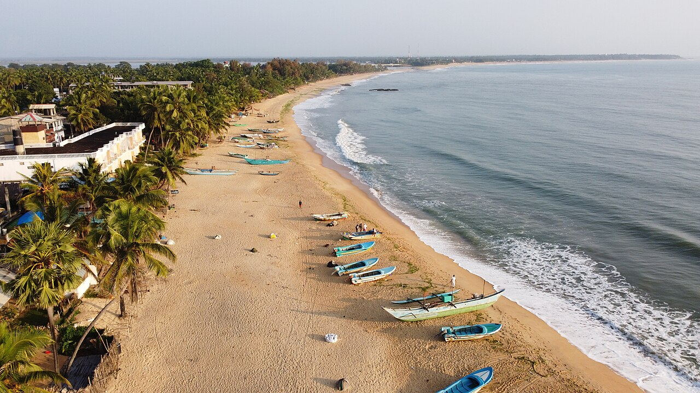
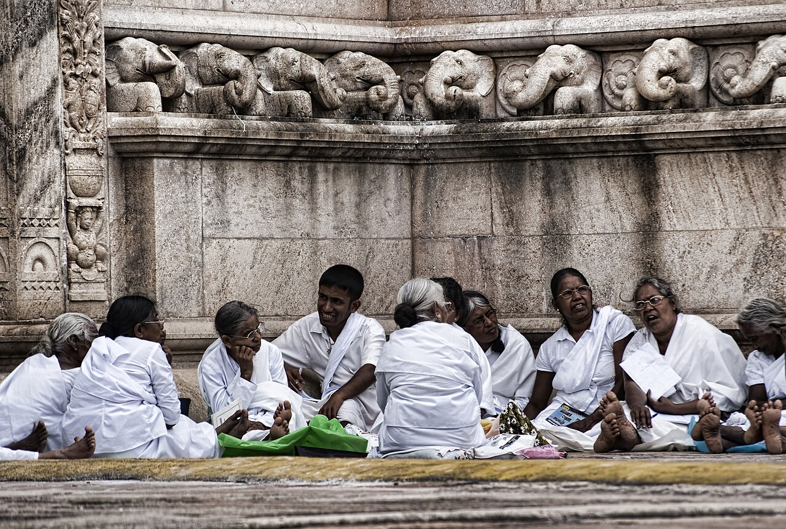
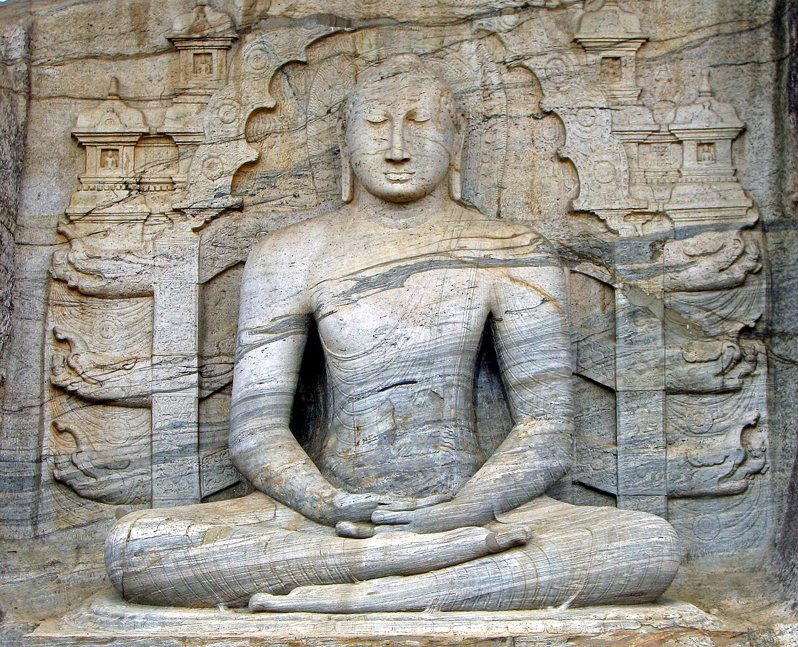

The Wonder of Asia
Iconic Sri Lankan Destinations
Explore 14 extraordinary destinations across Sri Lanka. Every photograph represents the genuine Sri Lankan location described.
Explore 14 extraordinary destinations across Sri Lanka. Every photograph represents the genuine Sri Lankan location described.
Combine any of these magnificent destinations into your custom private tour with Traumurlaub Lanka.
UNESCO Citadel
Rising dramatically 200 meters from central plains, King Kashyapa's 5th-century fortress features the colossal Lion Gate, mirror wall, exquisite painted frescoes, and symmetrical royal water gardens.

Cave MonasteriesThe largest and best-preserved cave temple complex in Sri Lanka, boasting five sanctuaries filled with 153 Buddha statues, ancient murals, and panoramic views of the surrounding countryside.
 Royal Hill Capital
Royal Hill Capital
Set amidst forested hills, Kandy is the cultural heart of Sri Lanka. Home to the golden-roofed Temple of the Sacred Tooth Relic, scenic lake, and the 147-acre Peradeniya Royal Botanical Gardens.
 Mountain Paradise
Mountain Paradise
Sri Lanka's beloved hill country village surrounded by cloud forests and tea plantations. Renowned for the British colonial Demodara Nine Arch Bridge, Little Adam's Peak, and Ravana Falls.

Little EnglandPerched at 1,868m elevation amidst temperate cool breezes, Nuwara Eliya is the capital of Ceylon Tea. Features manicured tea gardens, Tudor-style bungalows, Gregory Lake, and Ramboda Falls.
 Colonial Heritage
Colonial Heritage
A living UNESCO World Heritage town where Portuguese, Dutch, and British colonial ramparts enclose charming cobblestone lanes, boutique cafes, jewelry ateliers, and the iconic seaside lighthouse.
 Whales & Palms
Whales & Palms
Golden sand bays bordered by swaying coconut palms. Mirissa is one of the world's premier destinations for watching magnificent Blue Whales, swimming in secret coves, and photographing Coconut Tree Hill.
 Leopard Territory
Leopard Territory
Spanning nearly 1,000 sq km of dry woodland, scrub, and coastal lagoons, Yala holds the highest leopard density on Earth. Encounter herds of wild elephants, sloth bears, sambar deer, and mugger crocodiles.

Elephant KingdomResembling an African savanna with the scenic backdrop of the southern mountains, Udawalawe is guaranteed to thrill with wild elephant herds gathering around the massive central reservoir and the Elephant Transit Home.

Beach & Water SportsSri Lanka's coastal resort capital famous for broad golden beaches, tranquil mangrove riverboat safaris on the Bentota River, water skiing, jet skiing, sea turtle conservation projects, and luxury wellness retreats.

East Coast JewelEast coast wonderland featuring tranquil Nilaveli and Uppuveli beaches, snorkeling over coral reefs at Pigeon Island National Park, and the ancient cliff-top Koneswaram Hindu Temple overlooking Swami Rock.

World Surfing HavenRanked among the top surf spots in the world. A relaxed, bohemian crescent bay with legendary right-hand point breaks, beachfront seafood shacks, lagoon canoe safaris, and nearby Kumana National Park.

Ancient Sacred CapitalSri Lanka's first royal capital spanning over a millennium. Revered for colossal brick stupas like Ruwanwelisaya and Jetavanaramaya, serene stone carvings, and the sacred Sri Maha Bodhi tree—the oldest recorded planted tree in history.

Medieval KingdomThe magnificent 11th-century medieval kingdom of King Parakramabahu I. Explore monumental stone ruins, the Vatadage circular relic house, and the awe-inspiring rock-carved Buddha figures of Gal Vihara.
Your Personal Sri Lanka Travel Assistant